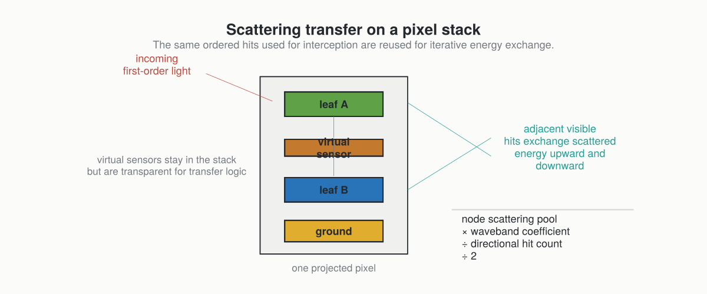

Scattering And Optical Assumptions
After first-order interception, ARCHIMED can redistribute part of the intercepted energy between scene components through iterative scattering.
This page also summarizes the main optical and modelling assumptions behind the light-only package.
Scattering In One Sentence
The model takes the energy first intercepted by each component, applies a waveband-specific scattering coefficient, and redistributes that scattered pool between adjacent visible hits along the same pixel-stack geometry used for interception.

The Main Assumptions
Surface-Based Scene
The model works on explicit surfaces, not on a continuous participating medium.
Finite Direction Set
Both incident radiation and scattering exchanges are described over a finite set of discrete directions.
Simplified Optical Behavior
The optical model is not a full BRDF / BTDF description. The current light runtime mainly needs waveband-specific scattering fractions, typically one for PAR and one for NIR.
Lambertian-Style Redistribution
The scattering logic assumes that the scattered pool can be redistributed across the available directional links in a way consistent with the historical ARCHIMED Lambertian simplification.
Optical Coefficients
In model files, optical_properties store scattering factors by waveband:
optical_properties:
PAR: 0.15
NIR: 0.90Interpreting those values:
- low PAR scattering means most intercepted PAR is absorbed
- high NIR scattering means much more of the intercepted NIR is re-emitted into the scattering process
This matches a classic plant optics intuition: leaves absorb PAR relatively strongly but scatter and transmit much more NIR.
How One Scattering Iteration Works
For each node and band:
- start from the current intercepted or previously scattered energy
- multiply by the node scattering coefficient
- divide by the number of relevant directional hits
- split upward and downward transfer symmetrically
- accumulate received scattered energy on neighboring visible hits
The process repeats until the remaining scene-scale scattered energy becomes small enough.
Stopping Rule
The historical ARCHIMED stopping rule is empirical but practical:
current scattered energy <= scattering_stop_ratio × initial scene intercepted energyThe default scattering_stop_ratio = 0.01 means the iteration stops once the remaining scattering pool falls below 1 percent of the initial intercepted energy in the band.
Virtual Sensors
Virtual sensors are special:
- they receive light
- they can report it
- they do not behave as opaque absorbing geometry
- they remain transparent in the scattering transfer logic
That is why they matter both for model semantics and for the choice of pixel-stack depth.
Soil And Ground Matter More When Scattering Is Enabled
Without ground geometry, a significant part of the lower-canopy exchange can be missed. That is why the historical ARCHIMED workflows often recommend paving or explicit ground tiles whenever scattering is active.
Where The Julia Port Differs Structurally
The Java code stored much of the scattering state directly in mutable per-node objects. The Julia port keeps the same model semantics, but represents the transfer logic through explicit containers such as:
- first-order results
- scattering transfer graphs
- scattering result objects
- final
LightBudget
The physical story stays the same even though the software architecture is more data-oriented.